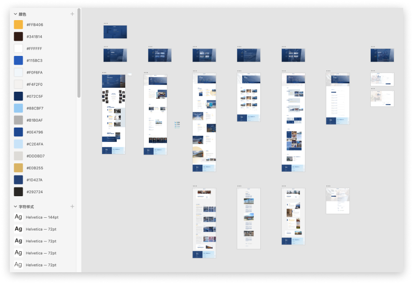
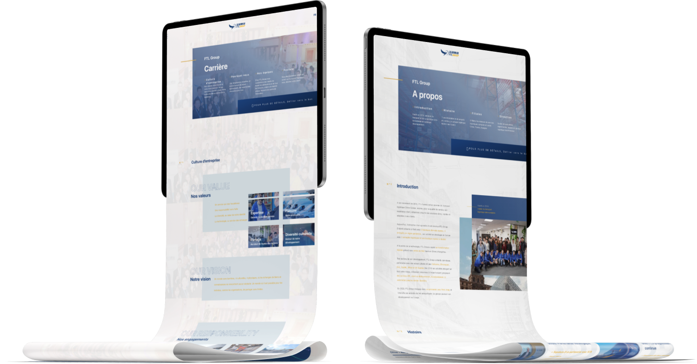
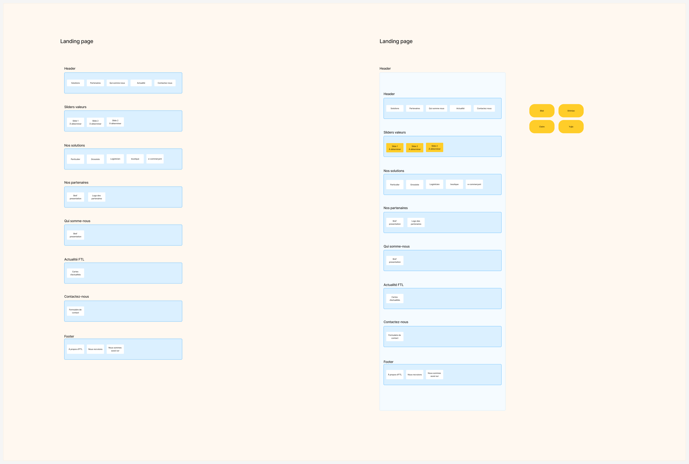
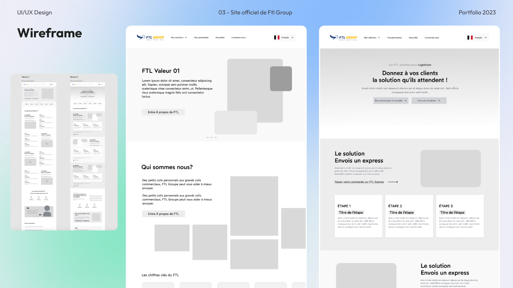
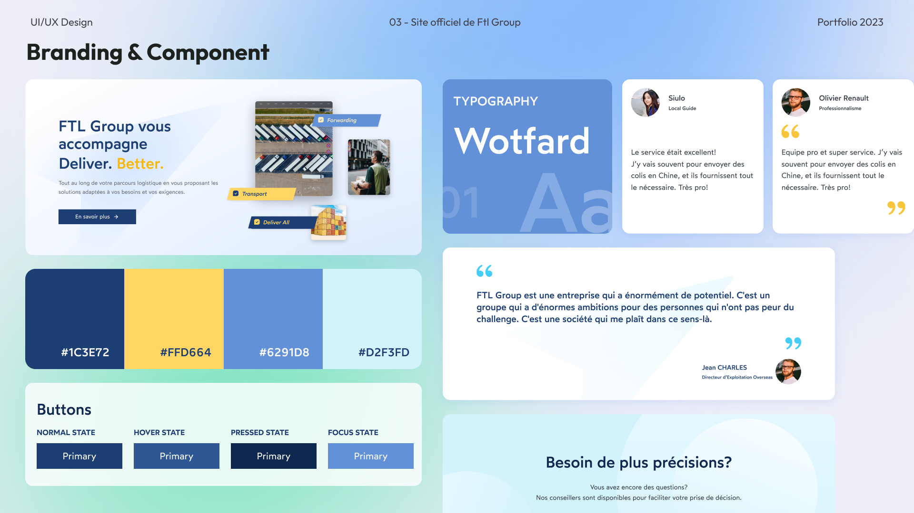
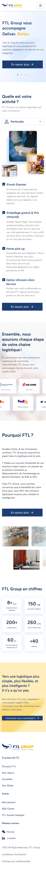

FTL could move goods from China to Europe. Its website could not explain that journey clearly enough to help sell it.
Role
Lead Product Designer
Scope
IA · Wireframes · Responsive UI
Team
4-person core team
Delivery
3 languages · Webflow · CMS
Status
Fully launched
01
The problem
The CEO needed a sales tool
The old site described the company. It did not help a prospect locate their problem.
FTL served large merchants moving goods into Europe through customs, transport hubs and last-mile delivery.
The old website exposed that operational structure all at once. Prospective clients struggled to find the part
that applied to them, and the CEO lacked a clear digital story to support business development.

01 / Source archive28 desktop artboards 15 mobile artboards

Archived V1Many pages and services, but no clear audience-based route through them.
Reframing
Do not ask clients to understand FTL first.
Help them recognise where FTL fits into their logistics chain.
02
Discovery
The redesign started with a business diagnosis, not a moodboard.
Interviews with the CEO, Marketing and Sales were paired with an audit of the inherited site and a benchmark of B2B service websites. The goal was to separate evidence from assumption before changing the interface.
Diagnosis
A credible operation was hidden behind a confusing digital front door.
SExisting strengths
Established Europe–China presence, responsive team and direct B2B relationships.
WExperience gaps
Dense navigation, dated hierarchy and no clear targeting by client context.
OCommercial opportunity
Use the website as a sales aid, clarify the offer and create contextual contact paths.
TDelivery risk
A non-modular site would be difficult for the small team to extend and maintain.
Working profiles
Four audiences entered with four different jobs to do.
These profiles were working design tools built from stakeholder knowledge. They guided prioritisation and content structure; they were not presented as statistically validated personas.
01Individual sender
Needs reassurance, a simple route and visible delivery support.
Decision: make the first action obvious.02Wholesaler
Needs volume handling, warehousing and cross-border coordination.
Decision: lead with operating capability.03Logistics partner
Needs a reliable European relay and service integration.
Decision: expose the network and hand-offs.04E-commerce team
Needs customs, fulfilment and last-mile support as one chain.
Decision: organise content around the journey.
Category patterns
We did not copy competitors. We used them to expose recurring category problems.
LensPattern observedDesign implication
Information architecture
Service catalogues mirrored internal departments.
Begin with client context, then reveal capabilities.
Tone and visual direction
Authority often became dense, institutional communication.
Keep credibility while reducing jargon and visual weight.
Primary target
Different B2B audiences were treated as one generic visitor.
Create explicit paths for four operating contexts.
Conversion
Generic contact prompts appeared after long corporate narratives.
Place relevant actions beside each solution journey.
The core decision
Navigation should begin with the client's operating context, not FTL's organisation chart.
The homepage became a router: recognise the visitor, connect their need to the right part of the logistics chain, prove the network, then invite a relevant business conversation.
03
From evidence to product
Build the hierarchy first. Let the interface follow.
Another UX designer primarily structured the site tree with me. I then led the wireframes and all UI,
turning the architecture into reusable modules for desktop and mobile.
01 / Structure
Turn services into findable routes.
The site tree connected audience needs, service pages and commercial actions before visual design began.

02 / Wireframes
Test hierarchy before polishing it.
Low-fidelity modules helped the team review entry points, content density and page relationships without debating decoration.

03 / UI system
Make a small team faster and more consistent.
Shared type, colour and interface patterns made responsive hand-off easier and gave the CMS site a reusable visual language.

Responsive product
Not one homepage. A system of journeys.
Choose a client context. The desktop and mobile prototypes switch together, showing how the same architecture adapts without losing hierarchy.
ftl-group.com

01 / 03Corporate overview
Built from the original source files
Real desktop and 320px mobile screens, staged as a live responsive product instead of flattened portfolio slides.
Delivery decision
Ship approved modules progressively, then make them operable.
With a small team and an approximately three-month window, we confirmed modules and passed them into development instead of waiting for every page to be finished.
01Structure
Confirm hierarchy and content responsibility.
02Module
Design shared patterns and responsive states.
03Build
Hand approved modules to the internal Webflow team.
04Operate
Enable Marketing & Communication to update content through CMS.
Fully launched
The complete multilingual website went live. It later disappeared because the company closed, not because the design was rejected.
Evidence boundary
Launched is a fact. Business growth is not.
No reliable analytics, lead attribution or post-launch research records remain. I can defend the design and delivery decisions; I cannot invent a conversion lift.
Verified
Site structure, responsive UI, full Webflow launch and CMS maintenance.
Not verified
Conversion, SEO, lead volume or task-completion improvement.
What I would add now
Content testing, analytics events, accessibility review and sales-lead attribution.
My contribution was not a prettier corporate website.
I turned a complex service network into a clearer path from client need to business conversation.